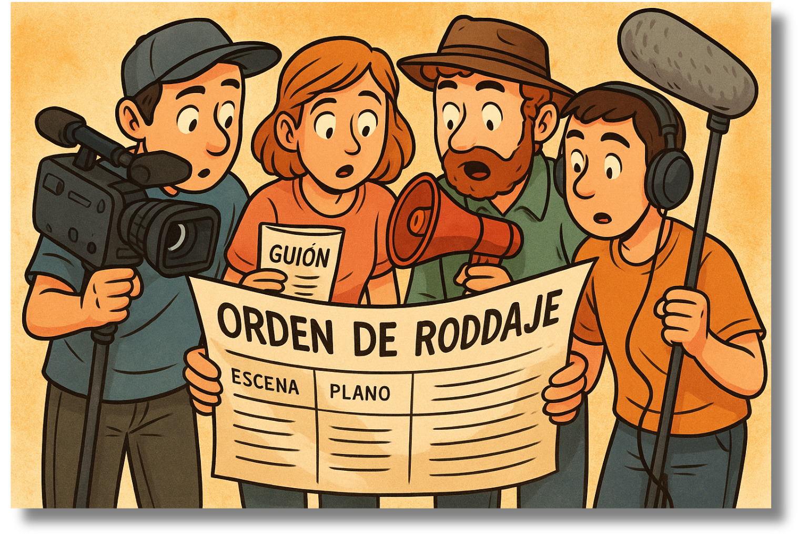

La brújula del rodaje
 El rodaje de LA HERRADURA contó con la participación de alumnos de la escuela SchoolTraining que aportaron equipos audiovisuales y material técnico necesario para hacer realidad el cortometraje así como algunos conocimientos técnicos que nos vinieron genial para que todos los planos tomados quedaran perfectos.
El rodaje de LA HERRADURA contó con la participación de alumnos de la escuela SchoolTraining que aportaron equipos audiovisuales y material técnico necesario para hacer realidad el cortometraje así como algunos conocimientos técnicos que nos vinieron genial para que todos los planos tomados quedaran perfectos.
Nuestros alumnos fueron parte del equipo en todo momento creando un ambiente de trabajo en grupo muy profesional.
En este proceso, la orden de rodaje fue una herramienta clave: nos permitió organizar las escenas, los horarios y a cada miembro del equipo, asegurando que nada quedara al azar. Gracias a ella, todos sabían en qué momento debían estar preparados —actores, cámaras, sonido, iluminación— y cómo se iba a desarrollar la jornada. Esta planificación no solo hizo posible que el rodaje saliera adelante sin imprevistos, sino que además enseñó al alumnado la importancia de la organización, la coordinación y el esfuerzo colectivo en un proyecto audiovisual.

Orden de rodaje 1.pdf de José Miguel Castillo Hernández